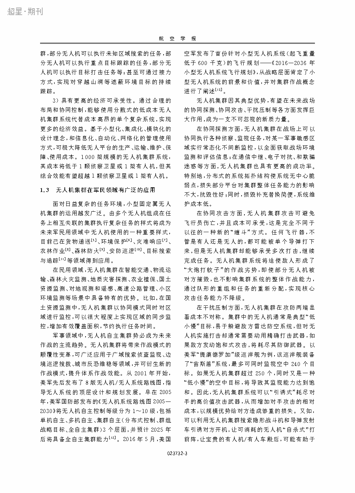
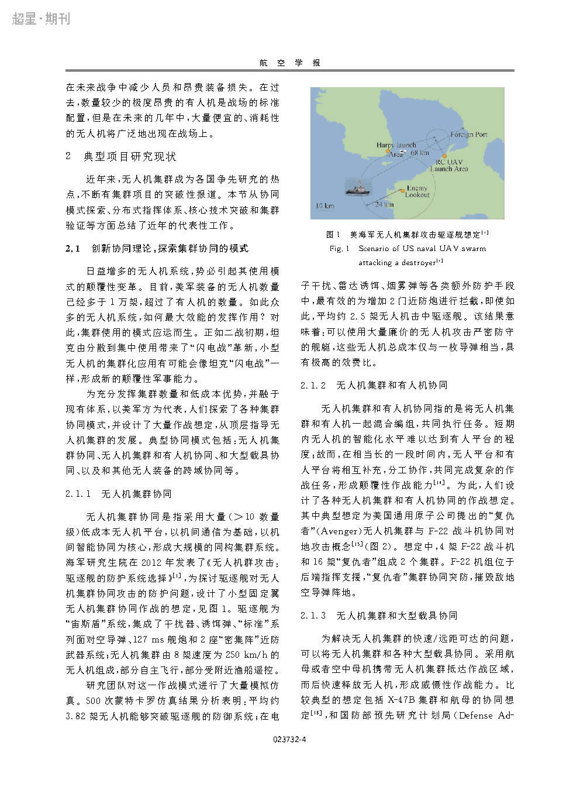
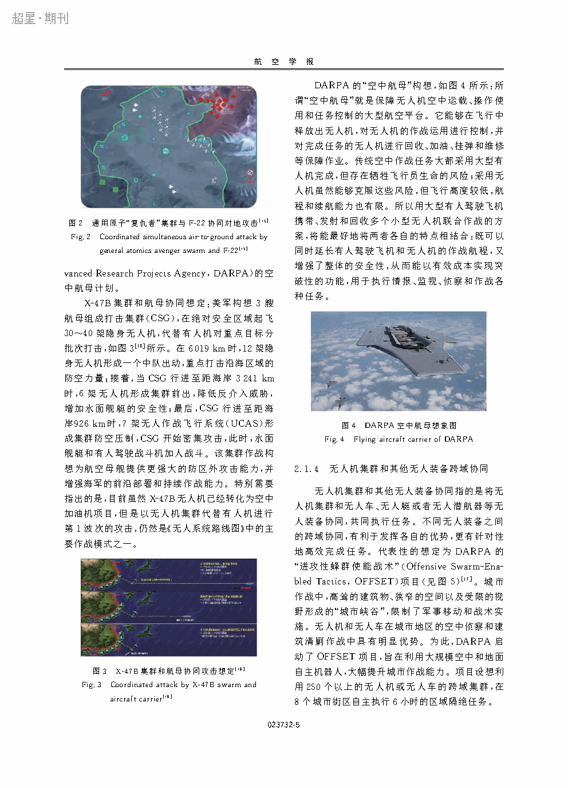

| Title | 小型固定翼无人机集群综述和未来发展（A Survey on Small Fixed-wing UAV Swarm: Current Status and Future Development） |
| Authors | 王祥科（Xiangke Wang）、刘志宏（Zhihong Liu）、丛一睿（Yirui Cong）、李杰（Jie Li）、陈浩（Hao Chen） |
| Affiliation | 国防科技大学（National University of Defense Technology, NUDT），智能科学学院 |
| Venue | 航空学报（Acta Aeronautica et Astronautica Sinica），2020 年，Vol. 41, No. 4, 023489 |
| DOI / Links | 知网链接 | 收稿日期：2019-09-19 | 网络出版：2019-12-30 | 中文核心期刊 |
| TL;DR | 从"系统内涵—典型项目—七类关键技术—未来趋势"四个维度系统综述了小型固定翼无人机集群的研究现状和发展方向。核心贡献：（1）明确提出小型固定翼集群的差异特征——不能悬停、速度快、转弯半径和安全间隔约束强——这些特征决定了固定翼集群在技术路线上与旋翼集群有本质区别；（2）将集群技术分解为七个核心维度：体系架构、通信组网、决策与规划、飞机平台、集群飞行、集群安全、集群指挥控制；(3) 在分析现有典型项目（CODE, OFFSET, 集群挑战赛等）的基础上，给出了面向未来实际应用的关键瓶颈和突破方向。 |
| Inspiration Source | → What Insight It Inspired | Type |
|---|---|---|
| 美军典型集群项目（CODE, OFFSET, 忠诚僚机, Perdix, Gremlins） | → 这些项目覆盖了从协同模式探索（CODE——分布式自主）、体系架构（OFFSET——开放式架构）、平台能力（Gremlins——空中投放回收）到集群验证（Perdix——百架级编队）的完整链路——展示了美国在此领域的体系化布局和代际发展 | 情报 / 对比 |
| 中国"集群挑战赛"及国内研究现状 | → 国内在集群飞行控制（大规模编队、密集穿越）方面有突出演示验证成果，但在体系架构、开放式标准、通信协议自主化方面与美军存在差距——这对标出国内研究的强项和弱项 | 对比 / 策略 |
| 固定翼 vs 旋翼的物理差异 | → 不能悬停 → 所有编队操作必须是连续的、不可逆的——这对通信（拓扑快速变化）、规划（前瞻窗口、失速约束）和控制（非完整约束）提出了全新的要求。本质上是"非完整约束下的集群"问题 | 物理 / 基础 |
| 体系架构的"单-群-体"三层模式 | → 复杂集群系统需要分层设计：单机（platform）→ 群（swarm——内部协同）→ 体（system of systems——多群协同 + 地面站）。每一层有自己的专注点和接口——这是系统工程的核心思想 | 架构 / 设计 |
flowchart TB
subgraph PLATFORM["1. 飞机平台"]
direction LR
P1["机体: 轻量化复合材料 · 折叠/模块化设计"]
P2["动力: 电动/油动 · 续航10-120min"]
P3["自驾仪: Pixhawk级 · IMU+GPS+空速计"]
P4["载荷: 微型光电/红外 · 电子战载荷"]
end
subgraph NETWORK["2. 通信组网"]
direction LR
N1["物理层: 跳频扩频 · 2.4G/900MHz/战术数据链"]
N2["MAC层: TDMA时隙分配 · 动态入网/退网"]
N3["网络层: 自组网路由(OLSR/AODV) · 拓扑感知"]
N4["协议: MAVLink → STANAG 4586 演进"]
end
subgraph FLIGHT["3. 集群飞行控制"]
direction LR
F1["编队控制: 一致性子 · 领导者-跟随者 · MPC"]
F2["协同机动: 密集穿越 · 编队重构 · 时空协调"]
F3["运动学约束: 最小速度 · 转弯半径 · 非完整约束"]
end
subgraph DECISION["4. 决策与规划"]
direction LR
D1["任务分配: 拍卖算法 · 分布式MTSP · 动态重分配"]
D2["航迹规划: RRT/A* · 带运动学的路径规划 · 避障"]
D3["协同搜索: 区域覆盖 · 目标识别融合 · 信息共享"]
end
subgraph SAFETY["5. 集群安全"]
direction LR
S1["机间避碰: 势场法 · 速度障碍(VO) · 紧急机动"]
S2["故障处理: 单机失效 → 编队重构 · 通信丢失 → 预设行为"]
S3["对抗安全: 电子干扰 · 诱饵/欺骗 · 抗毁性设计"]
end
subgraph C2["6. 指挥控制"]
direction LR
C21["人在回路: 态势显示 · 任务干预 · 授权等级"]
C22["集群自主: 分布式决策 · 群体涌现 · 异常检测"]
C23["体系架构: 集中式→分布式· 开放式标准· 互操作性"]
end
PLATFORM --> NETWORK --> FLIGHT --> DECISION
DECISION --> SAFETY
SAFETY --> C2
C2 -.->|"反馈: 人在回路的指令下达"| FLIGHT
SAFETY -.->|"安全约束传递"| FLIGHT
NETWORK -.->|"通信质量下降 → 触发降级模式"| DECISION
classDef plat fill:#fef7ed,stroke:#f59e0b,stroke-width:2px,color:#92400e
classDef net fill:#e8f0fe,stroke:#3b82f6,stroke-width:2px,color:#1d4ed8
classDef flt fill:#f0ebfd,stroke:#8b5cf6,stroke-width:2px,color:#6d28d9
classDef dec fill:#dbeafe,stroke:#2563eb,stroke-width:2px,color:#1e40af
classDef saf fill:#ffe4e6,stroke:#f43f5e,stroke-width:2px,color:#be123c
classDef c2 fill:#e6f7ee,stroke:#10b981,stroke-width:2px,color:#047857
class P1,P2,P3,P4 plat
class N1,N2,N3,N4 net
class F1,F2,F3 flt
class D1,D2,D3 dec
class S1,S2,S3 saf
class C21,C22,C23 c2
flowchart LR
subgraph PROJECTS["典型项目"]
CODE["CODE(美): 分布式自主
单操作员控6-10架"]
OFFSET["OFFSET(美): 开放式架构
游戏化集群战术开发"]
GREMLIN["Gremlins(美): 空中投放回收
平台可重复使用"]
PERDIX["Perdix(美): 百架级密集编队
F-16空中投放"]
CHINA["中国集群挑战赛
密集穿越/编队对抗"]
end
subgraph TECHS["验证的核心技术"]
T1["编队控制"]
T2["任务分配"]
T3["通信组网"]
T4["体系架构"]
T5["平台能力"]
end
CODE --> T1 & T2
OFFSET --> T2 & T3 & T4
GREMLIN --> T5 & T3
PERDIX --> T1 & T3 & T5
CHINA --> T1 & T2 & T5
classDef proj fill:#fef7ed,stroke:#f59e0b,stroke-width:2px
classDef tech fill:#e8f0fe,stroke:#3b82f6,stroke-width:2px
class CODE,OFFSET,GREMLIN,PERDIX,CHINA proj
class T1,T2,T3,T4,T5 tech
| 维度 | 覆盖范围 | 组织方式 |
|---|---|---|
| 集群内涵 | 什么是小型固定翼集群？与旋翼/大型无人机的差异？群体智能 vs 简单蜂群？ | 概念辨析 → 特征归纳 → 应用场景梳理 |
| 典型项目 | 美军 CODE/OFFSET/Gremlins/Perdix、欧洲项目、中国挑战赛及研究 | 按"模式→体系→平台→验证"四条线分别整理 |
| 关键技术 | 体系架构、通信组网、决策规划、飞机平台、集群飞行、集群安全、集群指控 | 七维独立展开（每维现状+瓶颈+代表性方法） |
| 发展趋势 | 各维度未来2-5年的研究方向和关键突破口 | 基于当前瓶颈的推演，按优先级排序 |
这是一篇面向领域的系统综述（Systematic Survey）——其目的不是提出新方法，而是为领域提供一份"技术地图"。对于新进入该领域的研究者，本文给出了完整的知识框架和参考文献索引；对于资深研究者，本文的"瓶颈分析"和"趋势展望"指出了最值得投入的方向。特别值得注意的是，本文是国内较早明确区分固定翼和旋翼集群技术路线的综述，填补了领域空白。
| 技术维度 | 核心挑战 | 与旋翼集群的本质差异 |
|---|---|---|
| 飞机平台 | 小型化（< 3kg）+ 长续航（> 30min）+ 低成本（可消耗）的三难平衡 | 旋翼已有成熟的 < 1kg 级方案；固定翼在同等重量下翼载荷和发动机限制更严 |
| 通信组网 | 高动态拓扑、有限带宽（共享通道）、抗干扰——在 30 m/s 相对速度下维持连接 | 旋翼速度低 → 拓扑变化慢 → 可以容忍更长的路由收敛时间 |
| 集群飞行 | 带非完整约束的协同控制 + 速度匹配 + 最小速度约束——四者同时满足 | 旋翼可以降速甚至悬停 → 编队保持不受最小速度约束 |
| 决策与规划 | 前瞻规划（必须提前考虑碰撞避免）+ 时间敏感（秒级决策）+ 协商分配（通信不完整时） | 旋翼可以在关键位置悬停重新规划 → 时间压力小得多 |
| 集群安全 | 高相对速度下的紧急避碰（60 m/s接近 → 反应时间 < 1s）+ 单机故障影响传播 | 旋翼相对速度低 → 更多反应时间 → 安全挑战级别较低 |
| 指挥控制 | 从1人控1机 → 1人控群的认知负荷革命 + 人在回路中的延迟容忍 | 与旋翼类似——但高速场景下人的干预延迟代价更大 |
| 体系架构 | 开放标准（互操作）+ 弹性（去中心化抗毁）+ 可扩展（从10架到100架到1000架） | 与旋翼类似——但固定翼集群通常面向更大空间尺度的任务 |
作为综述，本文的"方法"是系统化的文献调查与分类整理框架——而非具体的算法。但其对固定翼集群动力学约束的数学化描述极具价值——以下提炼论文中隐含或被引用的关键运动学约束和相关方法。
以下公式提炼自固定翼无人机的运动学和编队控制理论——部分在综述原文中讨论，部分是被综述引用的核心方法。
本文作为综述，重在组织而非深入推导。但其组织框架隐含了三个对理解固定翼集群至关重要的"第一性原理"——这些原理是区分固定翼集群和通用无人机集群的核心。
这解释了为什么固定翼编队的"响应时间"远大于旋翼——不是因为控制器慢，而是因为物理约束使状态空间中有些方向是"不直接的"。在设计集群控制律时，必须把非完整约束融入反馈结构——这通常通过"路径跟踪 + 编队保持"的双层架构实现：外层（运动学层）生成可行路径，内层（动力学层）跟踪路径。
📷 论文原图截图。图片保存至 figures/ 子目录。

📷 请将截图保存为figures/fig1.png本图展示了：论文提出的固定翼集群七维技术分类体系——从底层"飞机平台"到顶层"集群指控"的纵向层次结构，以及各维度之间的横向依赖关系。每个维度被进一步分解为子技术领域。

📷 请将截图保存为figures/fig2.png本图展示了：中美欧主要固定翼/通用集群项目的对比——按时间线排列，标注每个项目的核心突破（CODE——分布式自主；OFFSET——游戏化战术；Gremlins——投放回收；Perdix——百架编队；中国挑战赛——密集穿越）。

📷 请将截图保存为figures/fig3.png本图展示了：七个技术维度的当前成熟度评估（0-10 分制）和未来 2-5 年的发展预测。(a) 雷达图显示各维度成熟度（飞行控制最高、安全最低）。(b) 趋势箭头显示各维度的提升方向和速度。
| 方向 | 具体内容 | 优先级 |
|---|---|---|
| AI-empowered swarm | MADRL、LLM-based C2、foundation model for UAV——全面更新集群智能的算法谱系 | ★★★★★ |
| Electronic warfare resilience | GPS拒止环境下的导航、抗干扰/反欺骗通信、低截获概率信号设计——实战驱动的新维度 | ★★★★★ |
| Swarm vs. swarm combat | 集群之间的对抗（红蓝对抗）——目标分配+资源博弈+信息战——现有综述未覆盖 | ★★★★ |
| Quantum sensing/communication | 量子导航（无GPS自主定位）、量子保密通信用于集群——中长期但潜在颠覆性 | ★★★ |
| 参考文献 | 为什么重要 |
|---|---|
| Chung et al. (2018) — A survey on aerial swarm robotics. IEEE Trans. Robotics | 无人机集群的通用综述——与本文互补——提供更广泛的视角但缺乏固定翼的定制化分析。阅读时将两者对照，可以感受"通用综述"和"专项综述"的区别。 |
| 柯熙等 (2018) — 无人机集群技术综述. 中国科学: 信息科学 | 国内较早的集群综述——提供与本文不同的分类视角（更偏控制理论），有利于交叉比较国内外的综述体系。 |
| CODE Program Final Report (DARPA, 2019) | 美军最具代表性的固定翼集群项目——分布式自主的核心技术——理解实际军事需求驱动下的集群技术形态的必读文献。 |
| Perdix Swarm Demonstration (Strategic Capabilities Office, 2017) | 百架级固定翼集群的里程碑演示——证明大规模密集编队飞行的工程可行性——本文中集群飞行技术的验证标杆。 |